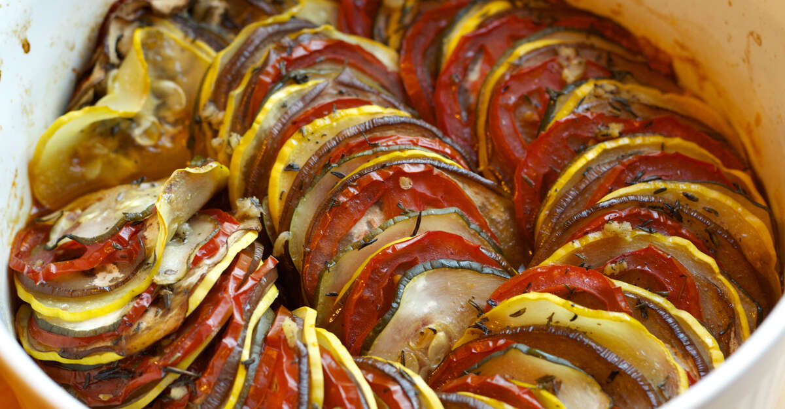

Ratatouille

Description
It's a stew of zucchini, peppers, tomatoes and eggplant, with herbs and spices and some onions and garlic usually
thrown in for good measure.
Ingredients
veggies
-
2 eggplants
-
6 roma tomatoes
-
2 yellow squashes
-
2 zucchinis
sauce
-
2 tablespoons olive oil
-
1 medium white onion, diced
-
4 cloves garlic, minced
-
1 red bell pepper, seeded and diced
-
1 yellow bell pepper, seeded and diced
-
kosher salt, to taste
-
freshly ground black pepper, to taste
-
28 oz crushed tomatoes (785g)
-
2 tablespoons thinly sliced resh basil
herb seasoning
-
2 tablespoons thinly sliced resh basil
-
1 teaspoon minced garlic
-
2 tablespoons finely chopped fresh parsely
-
2 teaspoons fresh thyme leaves
-
kosher salt, to taste
-
freshly ground black pepper, to taste
-
4 tablespoon olive oil
Steps
- Preheat the oven for 190°C
- Using a sharp knife or a mandoline, slice the eggplant, tomatoes, squash, and zucchini into approximately
1/16-inch (1-mm)-thick rounds, then set aside.
- Make the sauce: Heat the olive oil in a 12-inch (30-cm) oven-safe pan over medium-high heat. Sauté the onion,
garlic, and bell peppers until soft, about 10 minutes. Season with salt and pepper, then add the crushed tomatoes.
Stir until the ingredients are fully incorporated. Remove from heat, then add the basil. Stir once more, then
smooth the surface of the sauce with a spatula.
- Arrange the veggies in alternating slices, (for example, eggplant, tomato, squash, zucchini) on top of the
sauce, working from the outer edge to the center of the pan. Season with salt and pepper.
- Make the herb seasoning: In a small bowl, mix together the basil, garlic, parsley, thyme, salt, pepper, and
olive oil. Spoon the herb seasoning over the vegetables.
- Cover the pan with foil and bake for 40 minutes. Uncover, then bake for another 20 minutes, until the vegetables
are softened.
- Serve hot as a main dish or side. The ratatouille is also excellent the next day–cover with foil and reheat in a
350˚F (180˚C) oven for 15 minutes, or simply microwave to desired temperature.